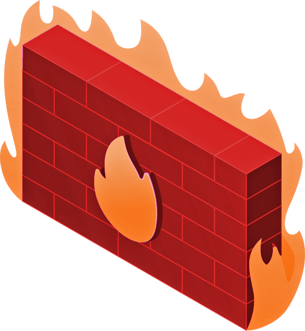
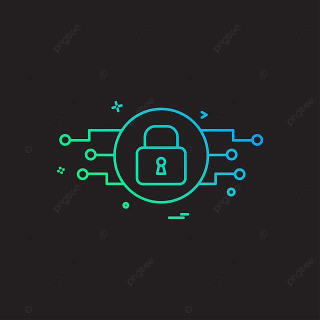
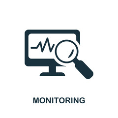
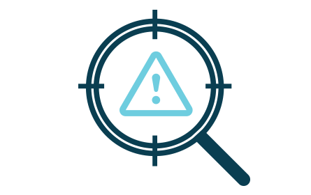

A security service is a specialized service that provides various forms of protection to individuals, businesses, or organizations. Security services can range from physical security, such as security guards or surveillance cameras, to cybersecurity, such as encryption or firewalls.
Firewall

A firewall is a network security system designed to monitor and control incoming and outgoing network traffic based on predetermined security rules. Its main purpose is to create a barrier between an internal network and external networks, such as the internet, to prevent unauthorized access to or from the internal network.Firewalls can be implemented as hardware devices, software programs, or a combination of both. They work by examining data packets that are transmitted between networks, checking them against a set of rules or criteria, and then either allowing or blocking them based on these rules.
Identity & Access Protection

Identity and access protection is a set of security measures designed to control and manage access to digital resources, such as computer systems, networks, and online services. It involves verifying the identity of users, controlling what they can access, and monitoring their activity to prevent unauthorized access or misuse of resources.
Directory Services
Directory services are a type of centralized database that stores information about network resources, such as users, groups, computers, printers, and other devices. Directory services allow users to access resources across a network or organization, providing a way to manage and organize resources and permissions in a hierarchical structure.
Security License Services
A security service license in computer systems typically refers to a legal agreement or permission granted by a software vendor or security service provider to use their security services or products.
Many security services, such as antivirus software, firewalls, intrusion detection systems, and security information and event management (SIEM) systems, are licensed software products that require a valid license agreement to be used legally.
Enforcement Monitoring

Enforcement monitoring refers to the process of monitoring and enforcing compliance with regulations, policies, or agreements. This may involve monitoring the activities of individuals, organizations, or systems to ensure that they are complying with established rules and regulations.
Encryption
Encryption is the process of converting plain or unencrypted data into an encoded or encrypted form, which can only be decoded or decrypted with a key or password. Encryption is used to protect sensitive data, such as personal information, financial data, and confidential business information, from unauthorized access, theft, or interception.Encryption works by applying a mathematical algorithm to the original data, transforming it into an unreadable format. The resulting encrypted data can only be decrypted using a corresponding key or password, which is known only to authorized users.
Key Management
Key management refers to the processes and procedures involved in generating, storing, distributing, and revoking cryptographic keys used in encryption and decryption processes. Cryptographic keys are the codes or passwords that are used to encrypt and decrypt data in order to protect it from unauthorized access.
Threat Detection

Threat detection is the process of identifying and analyzing potential security threats and vulnerabilities in order to prevent or mitigate potential security breaches. Threat detection may involve monitoring various sources of information, including network traffic, system logs, and user activity, to detect unusual or suspicious patterns or behavior.